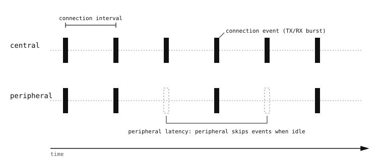

11.5. Anslutningar¶
När en central väljer en kringutrustning från annonseringsströmmen och skickar en connect request till den lämnar båda sidor annonserings-/skanningsläget och går in i en anslutning. Radion schemalägger nu sin aktivitet på datakanalerna i länklagret och hoppar pseudoslumpmässigt mellan dem enligt den sekvens som överenskoms vid anslutningstillfället. Allt ovanför länklagret – GATT, säkerhet, L2CAP – körs ovanpå den anslutning som etableras här.
11.5.1. Anslutningshändelsen¶
Två enheter i en BLE-anslutning strömmar inte kontinuerligt. De kommer överens om ett connection interval, och vid varje intervall väcker båda sidor radion, utbyter de paket som ligger i kö, bekräftar det de tagit emot och går tillbaka till viloläge. Vart och ett av dessa utbyten kallas en connection event.

Radion på varje sida är vaken endast under de korta anslutningshändelserna, medan allt annat sover. Kringutrustningen får hoppa över händelser under peripheral latency.¶
Talen som styr detta förhandlas fram vid anslutningstillfället och länklagret upprätthåller dem. De är synliga för applikationen både som rattar på förfrågningssidan och som de resulterande värden som rapporteras tillbaka.
Connection interval. 7,5 ms till 4 s, i steg om 1,25 ms. Centralen väljer det värde som kringutrustningen ber om, om inte förfrågan är orimlig. Kortare intervall levererar data med lägre latens till priset av mer radioaktivitet; längre intervall sparar ström men gör varje tur-och-retur långsammare.
Peripheral latency. Ett icke-negativt heltal N. Kringutrustningen får hoppa över upp till N anslutningshändelser när den inget har att skicka, och går tillbaka till viloläge i stället för att väcka radion för ett tomt utbyte. Användbart för sensorer som vaknar för att rapportera en gång i sekunden men ändå vill ha ett lågt responsivt anslutningsintervall för det sällsynta omedelbara meddelandet.
Supervision timeout. 100 ms till 32 s. Om någon av sidorna inte hör något från den andra under så lång tid förklaras länken förlorad och båda sidor återgår till annonsering/skanning. Timeouten måste vara längre än
connection_interval * (1 + peripheral_latency)– länklagret avvisar värden som bryter mot detta.
aioble.Device.connect() tar min_conn_interval_us och max_conn_interval_us så att centralen kan begära ett visst intervall; det faktiska värde som radion fastnade vid kan läsas tillbaka via länklagrets konfiguration efter att anslutningen är uppe.
11.5.2. Vad ”central” och ”peripheral” betyder inuti en anslutning¶
De roller som sätts vid annonseringstillfället består efter att anslutningen kommit upp:
Centralen styr tidsstyrningen – den äger master-sidan av hoppsekvensen och anslutningshändelserna.
Kringutrustningen är reaktiv. Den kan begära en ändring av anslutningsparametrarna (till exempel ett långsammare intervall för att spara ström), men centralen avgör om den ska acceptera.
Rollerna är oberoende av vem som är värd för GATT-databasen, vilket är en separat dimension. Enligt konvention är kringutrustningen också GATT-server och centralen är GATT-klient, men BLE tillåter att endera sidan är värd för GATT-tjänster. Kameror följer nästan alltid konventionen: kringutrustning + server för ”kameran publicerar data”-applikationer, central + klient för ”kameran läser från en sensor”-applikationer.
11.5.3. Maximal överföringsenhet (MTU)¶
Länklagret bär paket som är korta som standard – 27 byte nyttolast, varav endast 23 är tillgängliga för GATT. Det räcker för en liten avläsning eller ett kort kommando men är litet bredvid allt som är flera byte. Båda sidor kan förhandla upp detta, ända upp till den gräns som radions fasta programvara stöder (vanligtvis ett par hundra byte på moderna styrenheter).
aioble-API:et driver förhandlingen via aioble.DeviceConnection.exchange_mtu() och resultatet blir tillgängligt på attributet mtu. Större MTU innebär färre tur-och-retur-resor för alla värden större än ~20 byte, till en liten kostnad i buffertminne.
11.5.4. Livslängd¶
En anslutning varar tills något av följande inträffar:
endera sidan anropar
disconnect(),supervision-timeouten löser ut (utanför räckhåll, radio av, motparten kraschade), eller
ett uttryckligt länklagerfel (krypteringsmissmatchning, avvisad parkoppling).
När anslutningen bryts utlöser varje GATT-operation som ligger i kö eller pågår på den aioble.DeviceDisconnectedError, och alla async with connection-block som applikationen befinner sig i avslutas rent. En kringutrustning svarar typiskt genom att gå tillbaka till aioble.advertise() och vänta på nästa central; en central svarar antingen genom att skanna igen eller genom att lyfta fram frånkopplingen till applikationen.
Livslängden är en av anledningarna till att aioble är användbart. Ett synkront BLE-API skulle vara tvunget att exponera frånkopplings-återanrop och händelsemasker; asyncio-versionen förvandlar frånkopplingar till undantag inuti den korutin som väntade på operationen, vilket är precis vad async with-uppstädning är byggd för.